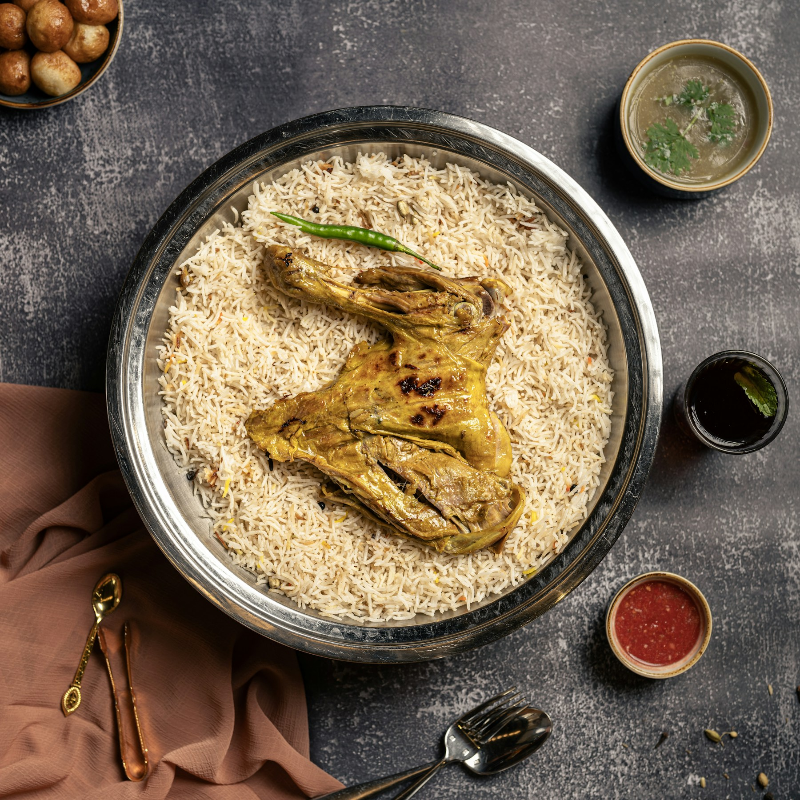

Łagodne · kremowe
Butter
Chicken
Grillowany kurczak w aksamitnym sosie pomidorowo-maślanym z nerkowcami.
36 złZamów ↗
Równoległa 2 · Warszawa
Aromatyczne sosy, ogień z tandoora i przyprawy mielone dla pełnego smaku. Na miejscu, na wynos albo prosto pod drzwi.
Otwarte codziennie 10:00–22:00

Kuchnia indyjska
w sercu Ochoty
Twój poziom ognia
Masz ochotę na kremową kormę czy ostre vindaloo? Powiedz nam przy zamówieniu, a dopasujemy intensywność przypraw do Ciebie.